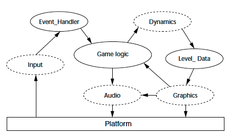
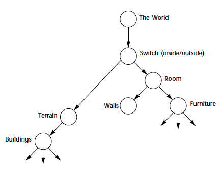
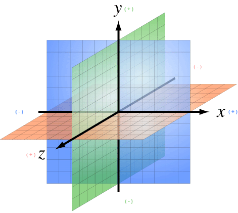
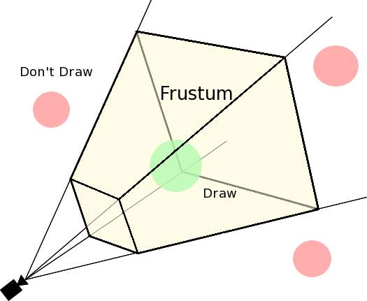

[ architecture ]


The base entity for scene graph nodes. It maintains a link to a parent, it's local transforms and the world's transforms

An invisible "handle" for scene objects which groups Geometries and other Nodes (audio, light, etc) together
Leaf node in the scene graph. A visible object on the screen which stores the object's looks (mesh and material)

3D objects can have irregular forms, other that basic 3D geometrical shapes. To aid mathematical computation, they are wrapped in a bounding volume which pragmatically represents the object as a sphere, cube, cylinder, etc.
A vector starting from the certain point of an entity having either a finite or infinite length. It determines which objects in the 3D space it intersected
(useful to compute distance)